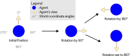

Rotation
The rotation task enables one to rotate the agent by an angle, towards an angle, towards an object or towards coordinates, around the y-axis.
Usage
First create a new AgentRotationTask and provide it either with an angle, a target object or target coordinates.
The constructor using the angle parameter has an extra boolean parameter isRotationByAngle that determines if the agent should rotate by the angle or towards it.
This is set to True by default. To then use the task, schedule it as usual.
This illustration shows the difference between rotating towards and by an angle: 
Example:
// Rotate towards a target object
AgentRotationTask rotationTarget= new AgentRotationTask(waypoints[1].gameObject);
// Rotate towards a coordinate
AgentRotationTask rotationCoordinate= new AgentRotationTask(waypoints[2].position);
// Rotate by a specific angle, by leaving the second parameter on its default
AgentRotationTask rotationAngle1= new AgentRotationTask(90);
// Change the rotation value of the agent to a specific angle
AgentRotationTask rotationAngle2= new AgentRotationTask(90, false);
// Schedule the tasks
taskSystem.ScheduleTask(rotationTarget, 0, "Base Layer");
taskSystem.ScheduleTask(rotationCoordinate, 0, "Base Layer");
taskSystem.ScheduleTask(rotationAngle1, 0, "Base Layer");
taskSystem.ScheduleTask(rotationAngle2, 0, "Base Layer");
Example Scene
The framework's RotationSample example scene demonstrates the different types of rotation.
The agent first rotates towards a target object (here the first waypoint), then towards a coordinate (the coordinates of the second waypoint),
and finally rotates by 90° and then towards 90°.